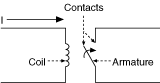
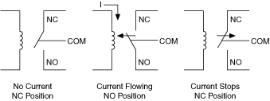
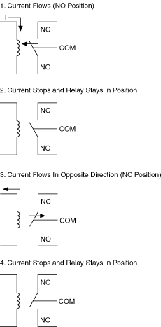
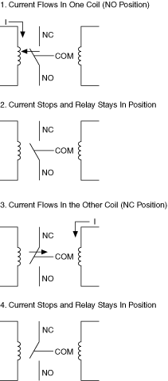

提交有关此主题的反馈。
提交有关此主题的反馈。 访问ni.com/support以获得技术支持。
访问ni.com/support以获得技术支持。电枢继电器是一种由线圈、电枢机构和触点组成的机电继电器。当线圈通电时，感应磁场移动电枢。这种运动打开或关闭触点。如果您的开关模块使用电枢继电器，请考虑影响继电器寿命的因素。下图表示电枢继电器。

有两种类型的电枢继电器，锁存和非锁存。
非闭锁继电器的初始位置为常闭 (NC)。该位置由弹簧或永磁体的力保持，而没有电流流动。当电流流过线圈时，常开 (NO) 触点由磁场力维持。当电流停止时，继电器恢复到其初始 NC 位置。
当断电时开关必须返回到已知状态时，非闭锁电枢继电器在控制应用中非常有用。下图显示了非锁定继电器的示例。

一个自锁继电器可以有一个或两个线圈。闭锁继电器没有默认位置，当驱动电流停止流动时，它保持在最后一个位置。虽然继电器本身可能处于锁定状态，但它们在模块中的复位位置取决于控制电路和软件（NI-SWITCH 在初始化和复位期间会复位所有模块上的所有继电器）。闭锁继电器在必须限制功耗和耗散的应用中很有用，因为一旦启动，继电器就不需要电流来保持其位置。
在单线圈锁存中，电流的方向决定了继电器的位置。在双线圈锁存中，电流流过的线圈决定了电枢的位置。下图显示了一个单线圈自锁继电器。

下图显示了一个两线圈锁存继电器。

提交有关此主题的反馈。 访问ni.com/support以获得技术支持。